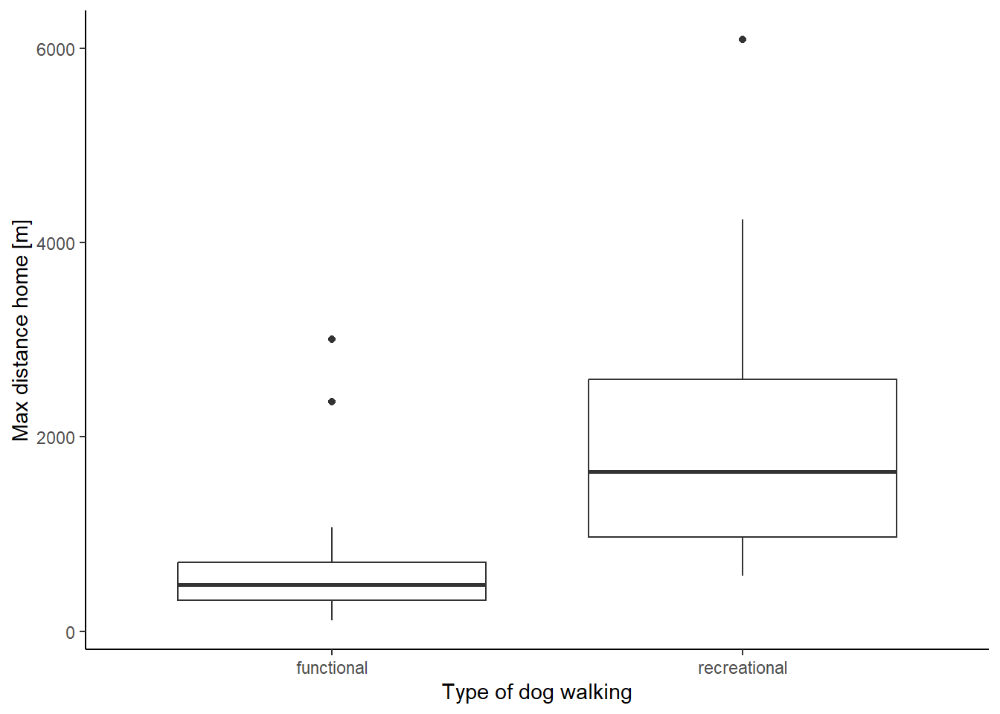

Code
library(sf)
library(tidyverse)
library(tmap)
library(cowplot)
library(lubridate)
library(dplyr)
library(plotly)
library(tmap)
library(SimilarityMeasures)
library(data.table)Final Project Patterns and Trends in Environmental Data - Computational Movement Analysis
library(sf)
library(tidyverse)
library(tmap)
library(cowplot)
library(lubridate)
library(dplyr)
library(plotly)
library(tmap)
library(SimilarityMeasures)
library(data.table)Walking is the most natural form of movement around our environment and occurs in multiple diverse contexts (Morris & Hardman, 1997). Walking can occur both as an integrative practice and a dispersed practice (Harries & Rettie, 2016). Walking as an integrative practice occurs when the purpose of walking is to actually experience the walk. In contrast, dispersed walking is walking that occurs as part of a different integrative practice, such as shopping or traveling to work; walking is not the purpose of the practice, but a means to achieve it (Westgard et al. 2021).
Walking with a dog is a complex public activity that involves negotiation between the dog and the walker. Dogs, then, are both agents and companions in the walk, not objects to be moved (Fletcher & Platt, 2016). Walking with a dog has been assumed to be leisure time or recreational. However, dog walking can also be an integrative practice when the walk is just to satisfy the basic needs of the dog. Westgarth et al. 2021, classify dog walks into two broad categories: functional and recreational walks. The concept of “functional” dog walks, which focus on fulfilling the dog’s needs, fits into Harries and Rettie’s definition of dispersed walking. In contrast, the concept of “recreational” walks aligns with the integrative approaches discussed by Harries and Rettie (2016), wherein the primary objective of the walk is to derive pleasure from it. Recreational walks cater to both the dog owner’s needs and those of the dog. As dog walking is a specific behavior different from general physical activity or even other types of walking, it requires a context-specific approach. Dog walking behavior is determined by the physical environment, social environment, and personal and dog-related factors (Westgard et al. 2014), and certain environments and contexts are deemed more conducive to functional than recreational dog walks (Westgard et al. 2021).
With the prevalence of personal mobile devices, a significant amount of positioning data capturing people’s movements can be gathered. Nevertheless, there remains a substantial disparity between the raw trajectory data, which represents the basic geographic coordinates detected by mobile devices, and the comprehension of human behavior. A trajectory is defined by a time interval, which is delimited by the instant at which the tracked object starts to travel and the instant when it stops (Spaccapietra et al. 2008). There is a clear requirement to analyze these raw trajectories and extract behavioral patterns in order to interpret them and gain novel insights into mobility behavior (Renso et al. 2013). We attempted to use tracking data from personal devices of two dog owners to characterize the two types of dog walking behaviors. Our research questions are the following:
How do recreational walks differ from functional dog walks? Are dog walks influenced by weather (precipitation)? How do the recreational dog walking patterns differ throughout the day? What are the movement behavior patterns during dog walks?
We tracked the daily movement behavior of two users with the tracking app Posmo over the course of two months (April & May 2023). The app tracked the user’s location every 15 seconds and detected transport mode. We used only tracking locations during dog walks. The final data set contained 25´455 data points of 103 trajectories in total. The following attributes comprised the movement data set of the two tracker users:
Attributes 5-7 were manually added to the two .csv files.
We then extracted the precipitation data from two weather stations closest to the hometowns of the two users (Hinwil and Schaffhausen). We kept the three attributes that were relevant to us:
We filtered tracking data in walking mode and manually separated the dog walking data (users’ input). The app created duplicate time stamps with different sets of coordinates that had to be cleaned out. Several pre-processing steps had to be done before we could join the two users’ data sets. First, we stored the X and Y coordinates into two separate columns. Next, the corresponding precipitation data was joined with the individual movement data sets. This process is defined as a semantic enrichment process, which pairs the existing data with additional data (Parent et al. 2013). A new column was added for rain/no rain. Trajectories that had precipitation for more than 50% of the walk were categorized as having rain, while trajectories were assigned “no rain” for values below this threshold. For each trajectory we calculated the longest distance home. New columns were added for the weekday (weekend/weekday) and time of the day (morning/afternoon/evening). Next, we segmented the trajectories and eliminated static points with the method used by Laube and Purves (2011). A threshold of the average step mean was applied to eliminate static positions (Fig. 1). However, after filtering static points, several trajectories were left out and therefore subsequent calculations were done with the original data set. Further parameters were calculated and stored in new columns such as step mean, time lag, step length, speed, duration, and distance.
# Import data
# Filter walk transport mode, select only necessary columns, and transform data frame into sf object and transform it into EPSG 2056 coordinate system
# Import Posmo data MK
posmo_MK <- read_delim("data/posmo_MK_edited3.csv", delim = ";") |>
filter(transport_mode == "Walk") |>
select(user_id, datetime, weekday, lon_x, lat_y, trajectoryID, Type, Shape) |>
st_as_sf(coords = c("lon_x","lat_y"), crs = 4326)|>
st_transform(2056)
# Import Posmo data MN
posmo_MN <- read_delim("data/posmo_MN_edited3.csv", delim = ";") |>
filter(transport_mode == "Walk") |>
select(user_id, datetime, weekday, lon_x, lat_y, trajectoryID, Type, Shape) |>
st_as_sf(coords = c("lon_x","lat_y"), crs = 4326)|>
st_transform(2056)
str(posmo_MK)
str(posmo_MN)
# import Weather Data with only the relevant columns
precip_data <- read_delim("data/weather_data.csv") |>
select(-tre200s0, -sre000z0)
precip_hinwil <- read_delim("data/weather_hinwil.csv")
# filter SHA weather station
precip_SHA <- precip_data |> filter(stn == "SHA") |> rename(datetime = time)
precip_SHA$datetime <- as.POSIXct(precip_SHA$datetime, tz = "UTC") # convert character into POSIXct
# HIW weather station
precip_HIW <- precip_hinwil |> filter(stn == "HIW")|> rename(datetime = time) |> rename(rco150z0 = rre150z0)
precip_HIW$datetime <- as.POSIXct(precip_HIW$datetime, tz = "UTC") # convert character into POSIXct
# Pre-processing
# store the coordinates into two separate columns
posmo_coordinates <- st_coordinates(posmo_MK)
posmo_MK <- cbind(posmo_MK, posmo_coordinates)
str(posmo_MK)
# the same with MN Data
posmoMN_coordinates <- st_coordinates(posmo_MN)
posmo_MN <- cbind(posmo_MN, posmoMN_coordinates)
# calculate longest distance from each trajectory to home for the two data sets
# Create an sf object with the house coordinates
house_MK <- read_delim("data/MK_house.csv") |>
st_as_sf(coords = c("lon_x","lat_y"), crs = 4326)|>
st_transform(2056)
houseMK_coordinates <- st_coordinates(house_MK)
house_MK <- cbind(house_MK, houseMK_coordinates)
# The same with MN
house_MN <- read_delim("data/MN_house.csv") |>
st_as_sf(coords = c("lon_x","lat_y"), crs = 4326)|>
st_transform(2056)
houseMN_coordinates <- st_coordinates(house_MN)
house_MN <- cbind(house_MN, houseMN_coordinates)
# Calculate the max distance from the house for each trajectory
posmo_MK$distance_home <- as.numeric(st_distance(posmo_MK, house_MK)[,1])
posmo_MK <- posmo_MK |>
group_by(trajectoryID) |>
mutate(max_distance = max(distance_home))
# the same for MN
posmo_MN$distance_home <- as.numeric(st_distance(posmo_MN, house_MN)[,1])
posmo_MN <- posmo_MN |>
group_by(trajectoryID) |>
mutate(max_distance = max(distance_home))
# Join posmo data with weather data then join the two dataframes
# Create new column with time values rounded to closest 10 minutes, to be able to join with weather data
posmo_MN <- posmo_MN |> mutate(
Datetime_round = lubridate::round_date(datetime,"10 minutes")
)
posmo_MK <- posmo_MK |> mutate(
Datetime_round = lubridate::round_date(datetime,"10 minutes")
)
# Join posmo data with weather data
posmo_weather_MN <- left_join(posmo_MN, precip_SHA, by = c("Datetime_round" = "datetime"))
posmo_weather_MK <- left_join(posmo_MK, precip_HIW, by = c("Datetime_round" = "datetime"))
# Delete double timestamps
posmo_weather_MN <- posmo_weather_MN |>
distinct(datetime, .keep_all = TRUE)
# Add new column for rain/no rain
posmo_weather_MN$precip[posmo_weather_MN$rco150z0 == 0] <- "no"
posmo_weather_MN$precip[posmo_weather_MN$rco150z0 > 0] <- "yes"
posmo_weather_MK$precip[posmo_weather_MK$rco150z0 == 0] <- "no"
posmo_weather_MK$precip[posmo_weather_MK$rco150z0 > 0] <- "yes"
# Join the two data frames vertically
posmo <- rbind(posmo_weather_MN, posmo_weather_MK)
# Get trajectories with precipitation >50% of the time
precip50 <- posmo |>
group_by(trajectoryID) |>
summarise(percent = length(which(precip == "yes")) / n()) |>
filter(percent >= 0.5) # trajectories 15, 16, 23, 45, T8, T9, T16, T20
# Create new column "precip_50 for trajectories with >= 50% of the time with rain
posmo <- posmo |>
group_by(trajectoryID, precip) |>
mutate(
precip_50 = case_when(
trajectoryID=="15" ~ "yes",
trajectoryID=="16" ~ "yes",
trajectoryID=="23" ~ "yes",
trajectoryID=="45" ~ "yes",
trajectoryID=="T8" ~ "yes",
trajectoryID=="T9" ~ "yes",
trajectoryID=="T16" ~ "yes",
trajectoryID=="T20" ~ "yes",
)
)
# assign all other values "no"
posmo$precip_50 <- posmo$precip_50 |> replace_na("no")
# Add a new column wday for Weekday/Weekend
posmo$wday <- ifelse(posmo$weekday %in% c("Sat", "Sun"), "weekend", "weekday")
# Add a new column start with the time at which the trajectory started and separate the time with format H and M
posmo <- posmo |>
group_by(trajectoryID) |>
mutate(start = min(datetime))
# Add a new column time_of_day for Morning/Afternoon/Evening
breaks <- lubridate::hour(hm("3:00", "10:00", "16:00", "21:59"))
labels <- c("Morning", "Afternoon", "Evening")
posmo$time_of_day <- cut(x=hour(posmo$start), breaks = breaks, labels = labels, include.lowest=TRUE)
posmo$start <- strftime(posmo$start, format="%H:%M:%S")
# Remove static points from trajectories. posmo-filter contains the trajectories without static points
str(posmo)
# calculate distance among Time-stamp 1 and 2 back and forward.
posmo <- posmo |>
group_by(trajectoryID) |>
mutate(
n_plus1 = sqrt ((lead(X, 1) - X)^2 + (lead(Y, 1)-Y)^2),
n_plus2 = sqrt ((lead(X, 2) - X)^2 + (lead(Y, 2)-Y)^2),
nMinus1 = sqrt((lag(X, 1) - X)^2 + (lag(Y, 1) - Y)^2),
nMinus2 = sqrt((lag(X, 2) - X)^2 + (lag(Y, 2) - Y)^2)
)
posmo <- posmo |>
rowwise() |>
mutate(
stepMean = mean(c(nMinus2, nMinus1, n_plus1, n_plus2))
) |>
ungroup()
which(posmo$stepMean> 50 )
# Remove static points by applying threshold, the threshold is the average step Mean.
posmo <- posmo |>
mutate(static = stepMean < mean(stepMean, na.rm = TRUE))
posmo_filter <- posmo |>
filter(!static)# Trajectories visualization with and without static points
K1 <- posmo %>%
filter(trajectoryID == "T1")
K1_filter <- posmo_filter %>%
filter(trajectoryID == "T1")
K1a <- ggplot(K1, aes(X, Y))+
geom_path()+
geom_point()+
coord_fixed()+
theme_minimal()
K1b <- ggplot(K1_filter, aes(X, Y))+
geom_path()+
geom_point()+
coord_fixed()+
theme_minimal()+
scale_x_continuous(limits = c(2708520, 2708675), breaks = c(2708550, 2708600, 2708650))
plot_grid(K1a, K1b, align = "hv",
labels = c("Raw", "Static points removed"),
hjust = c(-2,-0.4),
vjust = 2.5,
ncol = 2, nrow = 1)We evaluated differences between functional and recreational dog walks in speed, distance, and maximum distance from the house with t-tests. Randomly, we chose three functional and three recreational trajectories for each of the two subjects. Then we evaluated similarity by calculating Frechet distance among the trajectories within trajectory type and within subject. The effect of weather, specifically rain, on the dog walking behavior was assessed by comparing the length and speed of dog walks during rain and no rain with a t-test or the equivalent Welch’s test when the variances were not homogeneous. The effect of the time of day on the length of dog walks was evaluated with an ANOVA. Differences in duration and the length of the walk between weekdays and weekends were examined with a t-test.
# Timelag.
# How often was the position recorded. Calculated for the trajectories with and without (posmo_filter) static points
posmo <- posmo |>
group_by(trajectoryID)|>
mutate(timelag = as.numeric(difftime(lead(datetime), datetime, units = "secs")))
posmo_filter <- posmo_filter |>
group_by(trajectoryID)|>
mutate(timelag = as.numeric(difftime(lead(datetime), datetime, units = "secs")))
which(posmo$timelag> 300)# The threshold was set at 300 (15*20), sometimes we had pauses of up to 20 minutes during the walks that recorded the same location several times
which(posmo$timelag> 500)
# calculation for Step-length, duration, distance covered and speed
# calculation for the whole trajectories
posmo <- posmo |>
group_by(trajectoryID) |>
mutate(steplenght = sqrt ((X-lead(X))^2 + (Y-lead(Y))^2))|>
mutate(duration = (max(datetime)- min(datetime))/60)|>
mutate(distance = sum(steplenght, na.rm = TRUE))
which(posmo$steplenght > 30) #30 meters in 15 seconds its an average
# filter out outlayers (trackings with steplenght longer than 50 and timelags longer than 300)
posmo_speed <- posmo |>
filter(timelag < 300 | steplenght >50,)
posmo_speed <- posmo_speed|>
group_by(trajectoryID) |>
mutate(speed = mean(steplenght/timelag, na.rm = TRUE))
posmo_speed <- posmo_speed|>
filter(speed < 1.8)
# calculation with the trajectories without static points
# posmo_filter <- posmo_filter |>
# group_by(trajectoryID) |>
# mutate(steplenght = sqrt ((X-lead(X))^2 + (Y-lead(Y))^2))|>
# mutate(duration = (max(datetime)- min(datetime))/60)|>
# mutate(distance = sum(steplenght, na.rm = TRUE))
# Distance calculations for recreational/functional walks
dist_summary <- posmo |>
group_by(Type, distance) |>
summarise() |>
st_drop_geometry()
mean(dist_summary$distance[1:33]) # average distance of functional walks 1272.11 m
mean(dist_summary$distance[34:103]) # average distance of recreational walks 4389.43 m
# Differences in max distance to the house
Maxdist_summary <- posmo |>
group_by(Type, user_id, max_distance) |>
summarise() |>
st_drop_geometry() |>
filter(max_distance< 6090) #(two outliers were excluded)
mean(Maxdist_summary$max_distance[1:33]) # average distance of functional walks 624.39 m
mean(Maxdist_summary$max_distance[34:101]) # average distance of recreational walks 1833.64 m
# The effect of the weather on the dog-walking behavior
# calculate average speed for dog walks with and without precipitation
speed_precip_summary <- posmo_speed |>
group_by(precip_50, speed) |>
summarise() |>
st_drop_geometry()
mean(speed_precip_summary$speed[1:94])# average speed of 1.20 m/s for walks without precipitation
mean(speed_precip_summary$speed[95:102])# average speed of 1.30 m/s for walks with precipitation
t.test(speed~precip_50, speed_precip_summary)
# Evaluating differences in distance covered during dog walks with and without precipitation
precip_dist_summary <- posmo |>
group_by(precip_50, distance) |>
summarise() |>
st_drop_geometry()
t.test(distance ~ precip_50, precip_dist_summary)
# Temporal differences in dog walking behavior
# calculate average distance for recreational/functional walks for time of day 3 categories (morning/afternoon/evening)
dist_type_tofday_summary <- posmo |>
group_by(Type, time_of_day, distance) |>
summarise() |>
st_drop_geometry()
mean(dist_type_tofday_summary$distance[1:9]) # average distance of functional morning walks 1330.23 m
mean(dist_type_tofday_summary$distance[10:21]) # average distance of functional afternoon walks 1304.13 m
mean(dist_type_tofday_summary$distance[22:33]) # average distance of functional evening walks 1196.49 m
mean(dist_type_tofday_summary$distance[34:67]) # average distance of recreational morning walks 5154.33 m
mean(dist_type_tofday_summary$distance[68:90]) # average distance of recreational afternoon walks 3973.71 m
mean(dist_type_tofday_summary$distance[91:103]) # average distance of recreational evening walks 3124.44 m
# calculate average distance for morning/afternoon/evening walks
dist_timeofday_summary <- posmo |>
group_by(time_of_day, distance) |>
summarise() |>
st_drop_geometry()
mean(dist_timeofday_summary$distance[1:43]) # average distance of morning walks 4353.93 m
mean(dist_timeofday_summary$distance[44:78]) # average distance of afternoon walks 3058.42 m
mean(dist_timeofday_summary$distance[79:103]) # average distance of evening walks 2199.02 m
aov1 <- aov(distance~time_of_day, dist_timeofday_summary)
summary.aov(aov1)
# calculate average distance for weekday/weekend walks
dist_wday_summary <- posmo |>
group_by(wday, distance) |>
summarise() |>
st_drop_geometry()
mean(dist_wday_summary$distance[1:71]) # average distance of weekday walks 3565.237 m
mean(dist_wday_summary$distance[72:103]) # average distance of weekend walks 3236.906 m
t.test(distance~wday, dist_wday_summary)
# calculate average speed for weekday/weekend walks
speed_wday_summary <- posmo_speed |>
group_by(wday, speed) |>
summarise() |>
st_drop_geometry()
mean(speed_wday_summary$speed[1:70]) # average speed of weekday walks 1.22 m/s
mean(speed_wday_summary$speed[71:102]) # average speed of weekend walks 1.18 m/s
# Differences in duration of the walk on weekdays vs weekends
duration_wday_summary <- posmo |>
group_by (wday, duration) |>
summarise() |>
st_drop_geometry()
t.test(duration ~ wday, duration_wday_summary)Comparison of Functional and Recreational Dog-walks
#Comparing functional and recreational dog walks
#Speed calculation for the two type of walks excluding out-layers
speed_summary <- posmo_speed |>
group_by(Type, speed ) |>
summarise() |>
st_drop_geometry()
# t-Test to evaluate differences in speed between the two types of walks
t.test(speed~Type, speed_summary, var.equal = TRUE)
#mean in group functional mean in group recreational
# 1.202219 1.214331 Functional dog walks had an average speed of 1.20 m/s while the average speed of recreational dog walks was 1.21 m/s (Fig. 2), but they weren’t significantly different (t = -0.38, df = 100, p = 0.70).
ggplot(speed_summary, mapping = aes(Type, speed))+
geom_boxplot() +
labs(x = "Type of dog walking", y = "Speed [m/s]")+
theme_classic() The average distance of functional walks was 1272.11 m, compared to 4389.43 m for recreational walks (Fig. 3).
ggplot(dist_summary, mapping = aes(Type, distance))+
geom_boxplot() +
labs(x = "Type of dog walking", y = "Distance [m]")+
theme_classic()
The average maximum distance covered from home (Fig. 4) was 624.39 m for functional walks and 1833.64 m for recreational walks. Two outliers were not included in the calculation.
ggplot(Maxdist_summary, mapping = aes(Type, max_distance))+
geom_boxplot() +
labs(x = "Type of dog walking", y = "Max distance home [m]")+
theme_classic()
According to the Frechet distances, functional walk trajectories were more dissimilar than recreational trajectories (Fig. 5). However, we detected high variability in both types of trajectories.
# Frechet Distance
#Visualization of parameters
#randomly select trajectories to compare for MN
x <- sample(1:56, 1)
x
# Functional: 4, 36, 55 Recreational: 6, 39, 49
#randomly select trajectories to compare for MK
x1 <- sample(1:48, 1)
x1
#Functional: T11, T35, T43 Recreational: T40, T20, T27
#Create the matrices for the trajectories to compare
#Four recreational walks for MN
Traj6MN <- posmo |>
ungroup() |>
st_drop_geometry() |>
filter(trajectoryID == 6)|>
mutate(Datetime_int = as.integer(datetime))|>
select(X, Y, Datetime_int)
Traj6MN <- as.matrix(Traj6MN)
Traj39MN <- posmo |>
ungroup() |>
st_drop_geometry() |>
filter(trajectoryID == 39)|>
mutate(Datetime_int = as.integer(datetime))|>
select(X, Y, Datetime_int)
Traj39MN <- as.matrix(Traj39MN)
Traj49MN <- posmo |>
ungroup() |>
st_drop_geometry() |>
filter(trajectoryID == 49)|>
mutate(Datetime_int = as.integer(datetime))|>
select(X, Y, Datetime_int)
Traj49MN <- as.matrix(Traj49MN)
#Four functional walks for MN
Traj4MN <- posmo |>
ungroup() |>
st_drop_geometry() |>
filter(trajectoryID == 4)|>
mutate(Datetime_int = as.integer(datetime))|>
select(X, Y, Datetime_int)
Traj4MN <- as.matrix(Traj4MN)
Traj36MN <- posmo |>
ungroup() |>
st_drop_geometry() |>
filter(trajectoryID == 36)|>
mutate(Datetime_int = as.integer(datetime))|>
select(X, Y, Datetime_int)
Traj36MN <- as.matrix(Traj36MN)
Traj55MN <- posmo |>
ungroup() |>
st_drop_geometry() |>
filter(trajectoryID == 55)|>
mutate(Datetime_int = as.integer(datetime))|>
select(X, Y, Datetime_int)
Traj55MN <- as.matrix(Traj55MN)
#Four recreational walks for MK
Traj20MK <- posmo |>
ungroup() |>
st_drop_geometry() |>
filter(trajectoryID == "T20")|>
mutate(Datetime_int = as.integer(datetime))|>
select(X, Y, Datetime_int)
Traj20MK <- as.matrix(Traj20MK)
Traj40MK <- posmo |>
ungroup() |>
st_drop_geometry() |>
filter(trajectoryID == "T40")|>
mutate(Datetime_int = as.integer(datetime))|>
select(X, Y, Datetime_int)
Traj40MK <- as.matrix(Traj40MK)
Traj27MK <- posmo |>
ungroup() |>
st_drop_geometry() |>
filter(trajectoryID == "T27")|>
mutate(Datetime_int = as.integer(datetime))|>
select(X, Y, Datetime_int)
Traj27MK <- as.matrix(Traj27MK)
#Four functional walks for MK
Traj11MK <- posmo |>
ungroup() |>
st_drop_geometry() |>
filter(trajectoryID == "T11")|>
mutate(Datetime_int = as.integer(datetime))|>
select(X, Y, Datetime_int)
Traj11MK <- as.matrix(Traj11MK)
Traj35MK <- posmo |>
ungroup() |>
st_drop_geometry() |>
filter(trajectoryID == "T35")|>
mutate(Datetime_int = as.integer(datetime))|>
select(X, Y, Datetime_int)
Traj35MK <- as.matrix(Traj35MK)
Traj43MK <- posmo |>
ungroup() |>
st_drop_geometry() |>
filter(trajectoryID == "T43")|>
mutate(Datetime_int = as.integer(datetime))|>
select(X, Y, Datetime_int)
Traj43MK <- as.matrix(Traj43MK)#Similarity measures: Calculate Frechet distance for 3 randomly selected functional and 4 recreational walks within the same walker.
run_full <- FALSE
if(run_full){
# MN Functional: 4, 36, 55
A<- Frechet(Traj4MN, Traj36MN, testLeash=-1)# 1291697
B <- Frechet(Traj4MN, Traj55MN)# 1898412
D <- Frechet(Traj36MN, Traj55MN)# 606863
SM1 <- data.frame (
Frechet = c(A, B, D),
Trajpair = c("T4-T36", "T4-55", "T36-T55"),
Walker = c ("MN", "MN", "MN"),
Type = c("Functional", "Functional", "Functional")
)
# Recreational: 6, 39, 49
G <- Frechet(Traj6MN, Traj39MN) #1355605
H <- Frechet(Traj6MN, Traj49MN) #1641793
J <- Frechet(Traj39MN, Traj49MN) #286763
SM2 <- data.frame (
Frechet = c(G, H, J),
Trajpair = c("T6-T39", "T6-49", "T39-T49"),
Walker = c ("MN", "MN", "MN"),
Type = c("Recreational", "Recreational", "Recreational")
)
# MK Functional: T11, T35, T43
M <- Frechet(Traj11MK, Traj35MK) #106106.4
N <- Frechet(Traj11MK, Traj43MK) #1997576
P <- Frechet(Traj35MK, Traj43MK) #530645
SM3 <- data.frame (
Frechet = c(M, N, P),
Trajpair = c("T11-T35", "T11-43", "T35-T43"),
Walker = c ("MK", "MK", "MK"),
Type = c("Functional", "Functional", "Functional")
)
# Recreational: T40, T20, T27
S <- Frechet(Traj40MK, Traj20MK) #1106042
Z <- Frechet(Traj40MK, Traj27MK) #786486
V <- Frechet(Traj20MK, Traj27MK) #319621.3
SM4 <- data.frame(
Frechet = c(S, Z, V),
Trajpair = c("T40-T20", "T40-27", "T20-T27"),
Walker = c ("MK", "MK", "MK"),
Type = c("Recreational", "Recreational", "Recreational")
)
Frechet <- rbind(SM1, SM2, SM3, SM4)
write_csv(Frechet, "data-temp/Frechet.csv")
} else{
Frechet <- read_csv("data-temp/Frechet.csv")
}
ggplot(Frechet, mapping = aes(Type, Frechet))+
geom_boxplot() +
labs(x = "Type of dog walking", y = "Frechet Distance")+
theme_classic() 
ggplot(Frechet, aes(Trajpair, Frechet))+
geom_col(aes(fill = Walker))+
facet_wrap(~ Type, nrow = 2, scales = "free")+
theme_light()+
labs(x = "Trajectory pairs", y = "Frechet Distance")+
theme(axis.text.x = element_text(angle = 90))
The Effect of Weather on the Dog-Walking Behavior
There were only eight walks (7.8%) with precipitation, compared to 95 walks (92.2 %) without precipitation. Rainy weather did not affect the distance covered during dog walks (t = -0.14, df = 8, p = 0.89). In rainy weather, the average length of dog walks was 3577.27 m, whereas under no rain the average length was 3453.63 m. However, the weather conditions had an effect on the speed. Under rainy conditions, the speed of dog walks was faster than when there was no rain (t = -4.39, df = 27.16, p < 0.001) (Fig. 7). The average speed was 1.20 m/s for walks without precipitation, compared to an average speed of 1.30 m/s for walks with precipitation.
ggplot(speed_precip_summary, mapping = aes(precip_50, speed))+
geom_boxplot() +
labs(x = "Precipitation", y = "Speed [m/s]")+
theme_classic()
Temporal Differences in Dog Walking Behavior
Distance covered during dog walks varied throughout the day (Df = 2, F-value = 8.44, p < 0.001). Morning dog walks were on average longer than in the afternoon, and evening walks were the shortest on average (Fig. 8). Neither the length (t = 0.63, df = 53.73, p = 0.53) nor the duration of the walks (t = -0.19 secs, df = 48, p = 0.84) were affected by the day of the week. During weekdays, the length of dog walks were on average 3565.23 m, while on weekends the average was 3236.9 m.
ggplot(dist_type_tofday_summary, mapping = aes(time_of_day, distance))+
geom_boxplot() +
labs(x = "Time of day", y = "Distance [m]")+
theme_classic()
Dog Walking Behavior
The spatial movement behavior while dog walking ranged from axial movement to full-loop circuits. The most common spatial movement behavior was full-loops, followed by semi-loops, and the least common was axial trajectories (Fig. 9). In full-loop trajectories, walks occur without any repetition of routes. In semi-loop trajectories, the user moves partially over the axial route to a certain point, then starts a circuitous path to return home. In axial trajectories, the user takes a direct route from their starting point, stops at a certain point, then subsequently returns home using the same route.
# Summarise the trajectory shapes
shape_summary <- posmo |>
group_by(trajectoryID, Shape) |>
summarise() |>
ungroup() |>
group_by(Shape) |>
summarise(count = n()) |>
st_drop_geometry() |>
mutate(percent = round(count / sum(count) * 100, 2))
# Summarise the types of walks
type_summary <- posmo |>
group_by(trajectoryID, Type) |>
summarise() |>
ungroup() |>
group_by(Type) |>
summarise(count = n()) |>
st_drop_geometry() |>
mutate(percent = round(count / sum(count) * 100, 2))
# Summarise the walks with- and without precipitation
precip_summary <- posmo |>
group_by(trajectoryID, precip_50) |>
summarise() |>
ungroup() |>
group_by(precip_50) |>
summarise(count = n()) |>
st_drop_geometry() |>
mutate(percent = round(count / sum(count) * 100, 2))
# Pie chart of trajectory shapes
plot_ly(shape_summary, labels = ~Shape, values = ~percent, type = 'pie') %>%
layout(title = "Trajectory Shapes",
xaxis = list(showgrid = FALSE, zeroline = FALSE, showticklabels = FALSE),
yaxis = list(showgrid = FALSE))Figure 9: Pie chart displaying the trajectory shapes in percentage of all walks.
loop_plot <- posmo |>
filter(trajectoryID == "T7") |>
ggplot(aes(X, Y))+
geom_path(col = "blue", size = 0.9)+
coord_equal(ratio = 1) +
coord_fixed()+
theme_classic()+
labs(x = "X", y = "Y")+
scale_x_continuous(limits = c(2708300, 2709105), breaks = c(2708500, 2709000))+
scale_y_continuous(limits = c(1236930, 1237610), breaks = c(1237000, 1237200, 1237400, 1237600))
semi_loop_plot <- posmo |>
filter(trajectoryID == "T45") |>
ggplot(aes(X, Y))+
coord_equal(ratio = 1) +
geom_path(col = "black", size = 0.9)+
coord_fixed()+
theme_classic()+
labs(x = "X", y = "")+
scale_x_continuous(limits = c(2703250, 2704620), breaks = c(2703600, 2704400))+
scale_y_continuous(limits = c(1233760, 1235220), breaks = c(1234000, 1234400, 1234800, 1235200))
axial_plot <- posmo |>
filter(trajectoryID == "T4") |>
ggplot(aes(X, Y))+
coord_equal(ratio = 1) +
geom_path(col = "purple", size = 0.9)+
coord_fixed()+
theme_classic()+
labs(x = "X", y = "")+
scale_x_continuous(limits = c(2706650, 2707200), breaks = c(2706700, 2707100))+
scale_y_continuous(limits = c(1233300, 1234700), breaks = c(1233400, 1233800, 1234200, 1234600))
plot_grid(loop_plot, semi_loop_plot, axial_plot, align = "hv",
labels = c("Loop", "Semi-loop", "Axial"),
hjust = c(-2, -1, -2),
ncol = 3, nrow = 1)# Visualization of all trajectories of MN
plotMN <- posmo_MN |>
ggplot(aes(X, Y, group = trajectoryID)) +
geom_path(col = "black", alpha = 0.3, size = 0.6) +
coord_equal(ratio = 1) +
theme(legend.position = "none") +
theme_minimal()+
theme(panel.grid = element_blank(),
axis.ticks = element_line(),
axis.text.y = element_text(angle = 90, hjust = 0.5),
axis.title.x = element_text(margin = margin(t = 10,r = 0,b=0,l=0)),
axis.title.y = element_text(margin = margin(t = 10,r = 5,b=0,l=0))) +
labs(x = "X", y = "Y")+
scale_x_continuous(limits = c(2688500, 2694000), breaks = c(2689000, 2690500, 2692000, 2693500))+
scale_y_continuous(limits = c(1272500, 1278000), breaks = c(1273000, 1274500, 1276000, 1277500))
# MK home trajectories (excluding two trajectories in Kanton of Graubünden)
posmoMK_home <- filter(posmo_MK, !trajectoryID %in% c("T2", "T3"))
# Visualization of all home trajectories of MK
plotMK <- posmoMK_home |>
ggplot(aes(X, Y, group = trajectoryID)) +
geom_path(col = "black", alpha = 0.3, size = 0.6) +
coord_equal(ratio = 1) +
theme(legend.position = "none") +
theme_minimal()+
theme(panel.grid = element_blank(),
axis.ticks = element_line(),
axis.text.y = element_text(angle = 90, hjust = 0.5),
axis.title.x = element_text(margin = margin(t = 10,r = 0,b=0,l=0)),
axis.title.y = element_text(margin = margin(t = 10,r = 5,b=0,l=0))) +
labs(x = "X", y = "Y")+
scale_x_continuous(limits = c(2703000, 2711000), breaks = c(2704000, 2706000, 2708000, 2710000))+
scale_y_continuous(limits = c(1233000, 1240000), breaks = c(1233500, 1235500, 1237500, 1239500))
plot_grid(plotMN, plotMK, align = "hv",
labels = c("MN Trajectories", "MK Trajectories"),
ncol = 2, nrow = 1, vjust = 3)Comparison of functional and recreational dog-walks
Our research aimed to characterize two types of dog walking practices: functional and recreational. Additionally, we sought to evaluate temporal differences and the effect of the weather on dog walking behavior. According to Westgarth et al. (2021), functional walks are usually performed to meet the perceived practical needs of the dog: exercise and excretion. Recreational walks are used to de-stress and relax the owner, particularly after work or on weekends. During our classification of the two types of walking practices, we initially set the threshold of functional walks at 15 minutes, but only a few trajectories met this condition. Then we set the threshold at 20 minutes. One of the participant’s walks, however, still did not meet this condition. Finally, we set the threshold at 30 minutes. This threshold is supported by the recommendation of the US Department of Agriculture which advises that dogs should have at least 30 minutes of exercise per day (Pickup et al. 2017).
Our results agreed with our predictions: functional walks were usually taken close to home, in the neighborhood, because these were the most convenient places when short on time. We also predicted that the pace of functional walks would be faster than recreational walks. However, we found no differences in pace. For both dog owners, it was probably the dog who set the pace of the walks; or, while under time constraints, both owners chose short routes rather than a quickened pace. Hence, time constraints did not affect the pace.
We predicted that the trajectories followed during functional walks would be more similar to one another than recreational walks. We reasoned that there would be fewer options when walking the dog under time constraints, or that, when time was limited, the dog owners would default to a few favorite, practical routes. Yet the Frechet distances calculated suggest that the differences between the trajectories of functional walks were larger than among recreational trajectories (Figure 6). This indicates that the two dog owners don’t have favorite routes for functional walks but may have a some preferences regarding recreational walks. However, these results should be interpreted cautiously since the analyses only included three trajectories of each type of walk for each dog owner. It is likely that if the analysis had included all the trajectories, other patterns may have emerged.
The dog/owner relationship is thought to be the most important determinant of dog walking behavior (Westgarth et al. 2014). During this trial, most of the walks were recreational. This suggests that for both dog owners, the dog walking activity is an integrative practice, enjoyable for both dogs and dog owners.
The effect of weather on the dog-walking behavior
We initially predicted that poor weather walks would often be more functional in nature, shorter in duration and at a faster pace, but we had too few walks in poor weather to find meaningful patterns. Our results indicate that in rainy conditions, dog walks have a faster pace, but aren’t shorter than under dry conditions. Since both pet owners have flexible schedules for their walks most of the week, it is possible that the walks were timed in between rain episodes or when the rain was light. In this case, we can reason that the walks weren’t shorter, but at a faster pace to avoid being caught in the rain.
Temporal differences in dog walking behavior
We expected that weekend walks would be longer than those on weekdays due to time constraints. We also predicted that morning dog walks would cover longer distances than afternoon and evening walks. We did not find differences in the walks’ length between weekdays and weekends probably due to the flexibility in the schedule of both dog owners. The expected pattern would more likely emerge with a tighter work schedule.
As we predicted, the longest walks usually occurred in the morning. Morning walks are a way to boost energy levels and improve mood. They provide exercise opportunities for dogs and dog owners. In the absence of time constraints, it seems the most adequate time for long and pleasant walks is in the morning. In the evening, the walks were usually shorter and functional in nature.
Use of tracking data for characterizing dog walking behavior
Using tracking data to characterize a specific type of walking, namely dog walking, was challenging because user input was necessary to separate dog walking from other kinds of walking. It would be even more complicated with data sets from an extended period as it would be harder for users to recollect their daily activities. The double time stamps made the pre-processing difficult and time-consuming since it took time to decide which coordinates were correct. Tracking with a mobile device has limitations regarding the accuracy of positioning under dense forest conditions, which can affect speed estimates. Despite these limitations, we were able to characterize the two types of dog-walking behavior.
To summarize, the weather and time affect the intention of dog walking. Dog walks under rainy conditions were not shorter but faster, and dog owners seemed to mitigate bad weather conditions by adjusting the time of their walks. The length of the dog walks changed throughout the day, with longer walks in the morning and shorter walks in the evening. Mobile tracking data were adequate for the purpose of this study, but it would be necessary to complement them with user annotations.
Aspling, F., Juhlin, O.,& Chiodo, E. (2015). Smelling, pulling, and looking: unpacking similarities and differences in dog and human city life. In Proceedings of the 12th International Conference on Advances in Computer Entertainment Technology (pp.1-9).
Fletcher T, Platt L. (2016) Just a walk with the dog? Animal geographies and negotiating walking spaces. Social and Cultural Geography. https://doi.org/10.1080/14649365.2016.1274047
Harries, T., & Rettie, R. (2016). Walking as a social practice: dispersed walking and the organisation of everyday practices. Sociology of Health & Illness, 38(6), 874-883.
Laube, P., & Purves, R. S. (2011). How fast is a cow? Cross-Scale Analysis of Movement Data: Cross-Scale Trajectory Analysis. Transactions in GIS, 15(3), 401–418. https://doi.org/10.1111/j.1467-9671.2011.01256.x
Morris, J.N., Hardman, A.E. Walking to Health. Sports Med 23, 306–332. https://doi.org/10.2165/00007256-199723050-00004
Parent, C., Spaccapietra, S., Renso, C., Andrienko, G., Andrienko, N., Bogorny, V., Damiani, M. L., Gkoulalas-Divanis, A., Macedo, J., Pelekis, N., Theodoridis, Y., & Yan, Z. (2013). Semantic trajectories modeling and analysis. ACM Computing Surveys, 45(4), 1–32. https://doi.org/10.1145/2501654.2501656
Pickup, E., German, A., Blackwell, E., Evans, M., & Westgarth, C. (2017). Variation in activity levels amongst dogs of different breeds: Results of a large online survey of dog owners from the UK. Journal of Nutritional Science, 6, E10. doi:10.1017/jns.2017.7
Renso, C., Baglioni, M., de Macedo, J.A.F. et al. How you move reveals who you are: understanding human behavior by analyzing trajectory data. Knowl Inf Syst 37, 331–362 (2013). https://doi.org/10.1007/s10115-012-0511-z
Spaccapietra, S., Parent, C., Damiani, M. L., De Macedo, J. A., Porto, F., & Vangenot, C. (2008). A conceptual view on trajectories. Data & Knowledge Engineering, 65(1), 126–146. https://doi.org/10.1016/j.datak.2007.10.008
Westgarth, C., Christley, R. M., & Christian, H. E. (2014). How might we increase physical activity through dog walking?: A comprehensive review of dog walking correlates. International Journal of Behavioral Nutrition and Physical Activity, 11(1), 83. https://doi.org/10.1186/1479-5868-11-83
Westgarth, C., Christley, R. M., Marvin, G., & Perkins, E. (2021). Functional and recreational dog walking practices in the UK. Health Promotion International, 36(1), 109–119. https://doi.org/10.1093/heapro/daaa051